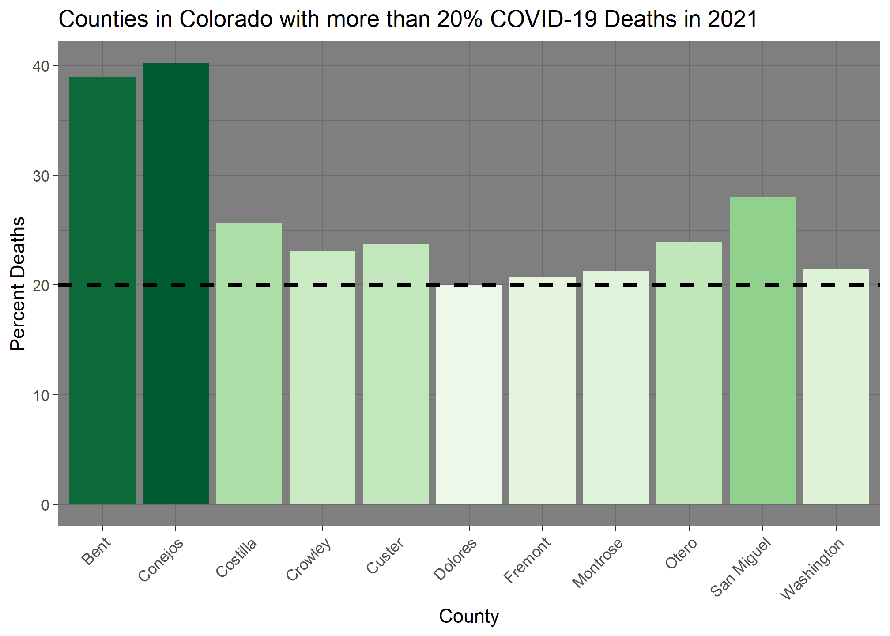
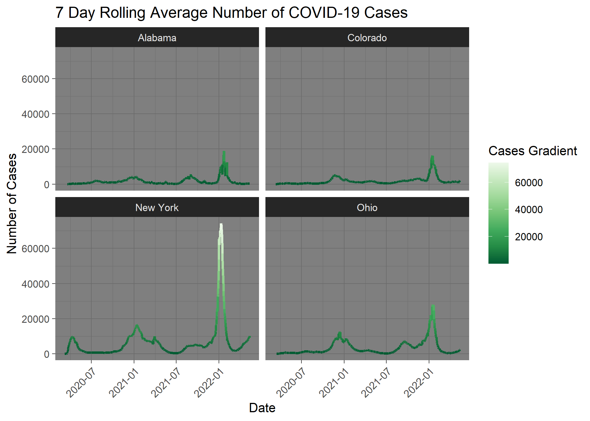
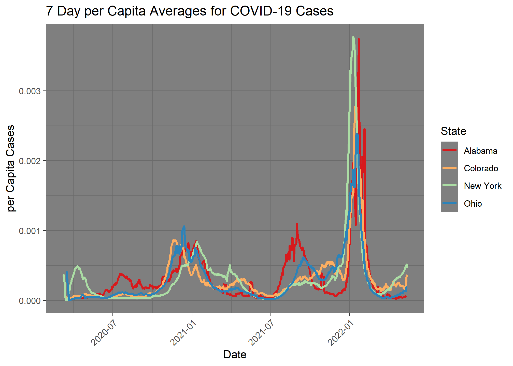
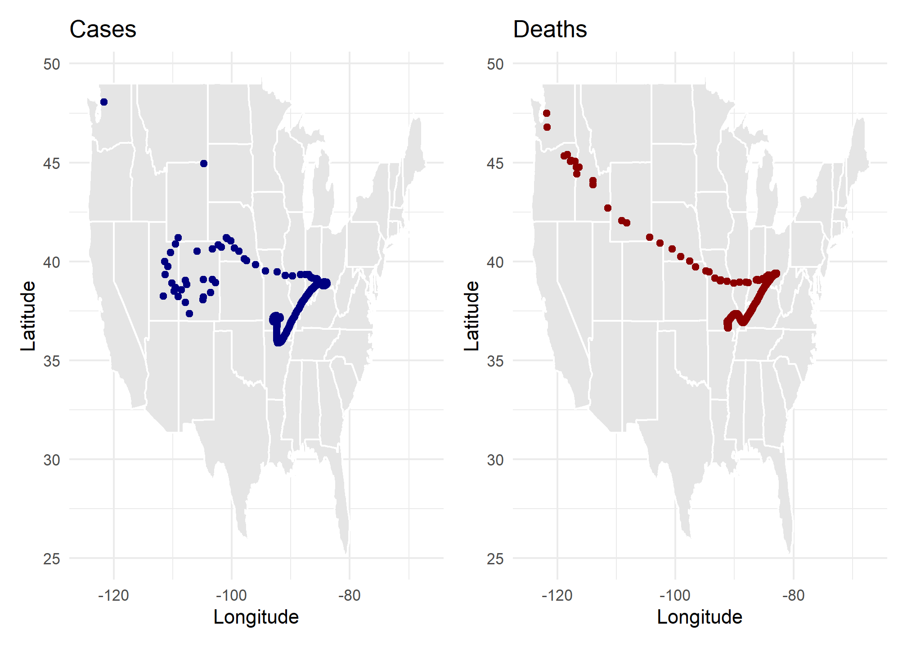
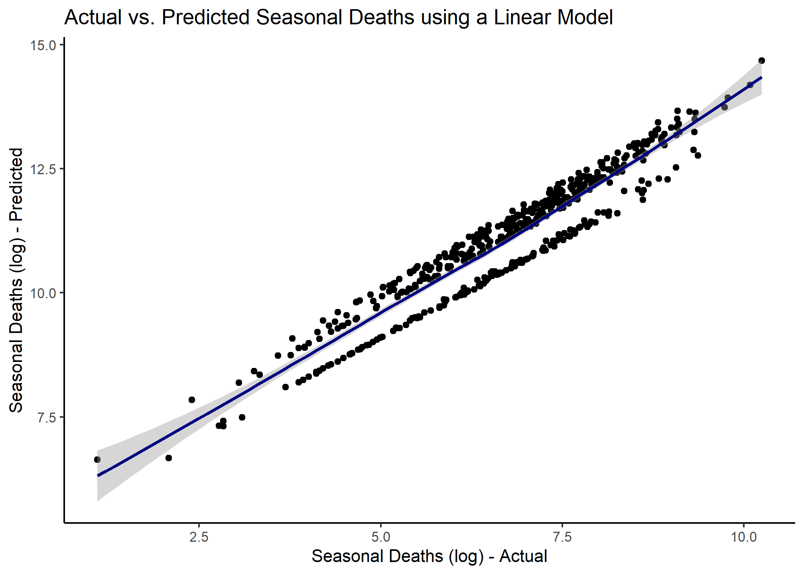

library(tidyverse)
library(flextable)
library(zoo)Lab 1: COVID-19 Trends
Public Health & Time: Data Science Tools

Load Libraries
In this lab I practiced data wrangling and visualization skills using COVID-19 data curated by the New York Times. This is a large dataset measuring the cases and deaths per US county across the lifespan of COVID from its early beginnings to just beyond its peak in 2023. The data stored in daily cumulative counts is messy and is a great example of data that needs to be wrangled and cleaned before any analysis can be done.
Data
This data was used during the peak of the COVID-19 pandemic to create reports and data visualizations like this, and are archived on a GitHub repo here. A history of the importance can be found here.
Imagine it is Feb 1st, 2022. As a data scientist for the state of Colorado Department of Public Health, I have been tasked with giving a report to Governor Polis each morning about the most current COVID-19 conditions at the county level.
As it stands, the Colorado Department of Public Health maintains a watch list of counties that are being monitored for worsening COVID trends. There are six criteria used to place counties on the watch list:
- Doing fewer than 150 tests per 100,000 residents daily (over a 7-day average)
- More than 100 new cases per 100,000 residents over the past 14 days…
- 25 new cases per 100,000 residents and an 8% test positivity rate
- 10% or greater increase in COVID-19 hospitalized patients over the past 3 days
- Fewer than 20% of ICU beds available
- Fewer than 25% ventilators available
Of these 6 conditions, I am responsible for monitoring condition 2.
Question 1: Daily Summary
NYT COVID data repository README:
“We are providing two sets of data with cumulative counts of coronavirus cases and deaths: one with our most current numbers for each geography and another with historical data showing the tally for each day for each geography … the historical files are the final counts at the end of each day … The historical and live data are released in three files, one for each of these geographic levels: U.S., states and counties.”
To start, I set up a reproducible framework to communicate the following in a way that can be updated every time new data is released (daily):
- cumulative cases in the 5 worst counties
- total NEW cases in the 5 worst counties
- A list of safe counties
The analysis is built so that running it will extract the most current data straight from the NY-Times URL and the state name and date are parameters that can be changed allowing this report to be run for other states/dates.
Steps:
Read in the data from the NY-Times URL with
read_csvusingtidyverse. The data read from Github is considered the “raw data”. I leave “raw-data-raw” and generate meaningful subsets of data as I go.Create an object called
my.dateand set it as “2022-02-01” - ensure this is adateobject.Create a object called
my.stateand set it to “Colorado”.Start by making a subset that limits the data to Colorado, and add a new column with the daily new cases by county. Do the same for new deaths.
Using your subset, generate (2) tables. The first should show the 5 counties with the most CUMULATIVE cases on your date of interest, and the second should show the 5 counties with the most NEW cases on that same date.
Read in Data
dat <- read_csv("https://raw.githubusercontent.com/nytimes/covid-19-data/master/us-counties.csv")Initial Objects
my.date <- as.Date("2022-02-01")
my.state <- "Colorado"Colorado Data
co_dat <- dat %>%
filter(state == my.state) %>%
group_by(county) %>%
mutate(new_cases = cases - lag(cases, n = 1),
new_deaths = deaths - lag(deaths, n = 1)) %>%
drop_na() %>%
ungroup()Data Tables
co_dat_cum <- co_dat %>%
filter(date == my.date)
slice_max(co_dat_cum, n = 5, order_by = cases) %>%
select(county, state, cases, new_cases, deaths) %>%
flextable() %>%
set_caption("Top 5 Counties with Most Cumulative Cases") %>%
theme_zebra()county | state | cases | new_cases | deaths |
|---|---|---|---|---|
El Paso | Colorado | 170,673 | 630 | 1,518 |
Denver | Colorado | 159,022 | 389 | 1,194 |
Arapahoe | Colorado | 144,255 | 401 | 1,172 |
Adams | Colorado | 126,768 | 326 | 1,224 |
Jefferson | Colorado | 113,240 | 291 | 1,219 |
slice_max(co_dat_cum, n = 5, order_by = new_cases) %>%
select(county, state, cases, new_cases, deaths) %>%
flextable() %>%
set_caption("Top 5 Counties with New Cases") %>%
theme_zebra()county | state | cases | new_cases | deaths |
|---|---|---|---|---|
El Paso | Colorado | 170,673 | 630 | 1,518 |
Arapahoe | Colorado | 144,255 | 401 | 1,172 |
Denver | Colorado | 159,022 | 389 | 1,194 |
Adams | Colorado | 126,768 | 326 | 1,224 |
Jefferson | Colorado | 113,240 | 291 | 1,219 |
Question 2: Evaluating Census Data (EDA)
Raw count data can be deceiving given the wide range of populations in Colorado countries. To help normalize data counts, additional information is needed on the population of each county.
Population data is offered by the Census Bureau is found here.
pop_url <- 'https://www2.census.gov/programs-surveys/popest/datasets/2020-2023/counties/totals/co-est2023-alldata.csv'
FIPs codes: Federal Information Processing
How FIPS codes are used
- FIPS codes are used in census products
- FIPS codes are used to identify geographic areas in files
- FIPS codes are used to identify American Indian, Alaska Native, and Native Hawaiian (AIANNH) areas
How FIPS codes are structured
- The number of digits in a FIPS code depends on the level of geography
- State FIPS codes have two digits
- County FIPS codes have five digits, with the first two digits representing the state FIPS code
The COVID data provides a 5 digit character FIP code representing the state in the first 2 digits and the county in the last 3. In the population data, the STATE and COUNTY FIP identifiers are in separate columns. To make these compatible I need to create a FIP variable that concatinates (combines) the 2 digit STATE and the 3 digit COUNTY FIP.
Steps:
- Created a five digit FIP variable and only keep columns that contain “NAME” or “2021”. Additionally all state level rows (e.g. COUNTY FIP == “000”) are removed.
pop_data <- read_csv(pop_url)
pop_colo <- pop_data %>%
filter(STNAME == 'Colorado') %>%
filter(COUNTY > '000') %>%
mutate(fips = paste0(STATE, COUNTY)) %>%
select(fips, contains(c('NAME', '2021')))- Description of data after manipulation:
I intentionally named the “fips” column “fips” to match with the COVID data for Colorado. I knew we would be merging these data tables together. The “pop_colo” data contains information about estimated population, deaths, births, and immigration statistics by county in Colorado. There are 19 columns, and 64 rows for the 64 counties. I like these functions for browsing the data: names(), glimpse(), head(), and summary(). The skim() function is sort of like the summary() function but needs the skimr package installed.
names(pop_colo)
glimpse(pop_colo)
str(pop_colo)
head(pop_colo)
library(skimr)
skim(pop_colo)Question 3: Per Capita Summary
Join the population data to the Colorado COVID data and compute the per capita cumulative cases, per capita new cases, and per capita new deaths:
colo_join <- inner_join(pop_colo, co_dat, by = 'fips')
colo_join_tidy <- colo_join %>%
select(fips, POPESTIMATE2021, DEATHS2021, date, county, state, cases, deaths, new_cases, new_deaths)
colo_join_mydate <- colo_join_tidy %>%
filter(date == my.date) %>%
mutate(casespc = cases/POPESTIMATE2021,
newcasespc = new_cases/POPESTIMATE2021,
newdeathspc = new_deaths/POPESTIMATE2021)Generate (2) new tables. The first should show the 5 counties with the most cumulative cases per capita on your date, and the second should show the 5 counties with the most NEW cases per capita on the same date. Your tables should have clear column names and descriptive captions.
slice_max(colo_join_mydate, n = 5, order_by = casespc) %>%
select(date, state, county, POPESTIMATE2021, cases, new_cases, casespc) %>%
flextable() %>%
set_caption("Top 5 Counties with Most Cumulative Cases per Capita") %>%
theme_zebra()date | state | county | POPESTIMATE2021 | cases | new_cases | casespc |
|---|---|---|---|---|---|---|
2022-02-01 | Colorado | Crowley | 5,735 | 2,935 | 56 | 0.5117698 |
2022-02-01 | Colorado | Bent | 5,339 | 2,199 | 22 | 0.4118749 |
2022-02-01 | Colorado | Pitkin | 17,337 | 5,946 | 7 | 0.3429659 |
2022-02-01 | Colorado | Lincoln | 5,473 | 1,874 | 5 | 0.3424082 |
2022-02-01 | Colorado | Logan | 21,006 | 6,402 | 25 | 0.3047701 |
slice_max(colo_join_mydate, n = 5, order_by = newcasespc) %>%
select(date, state, county, POPESTIMATE2021, cases, new_cases, newcasespc) %>%
flextable() %>%
set_caption("Top 5 Counties with Most New Cases per Capita") %>%
theme_zebra()date | state | county | POPESTIMATE2021 | cases | new_cases | newcasespc |
|---|---|---|---|---|---|---|
2022-02-01 | Colorado | Crowley | 5,735 | 2,935 | 56 | 0.009764603 |
2022-02-01 | Colorado | Bent | 5,339 | 2,199 | 22 | 0.004120622 |
2022-02-01 | Colorado | Sedgwick | 2,326 | 441 | 9 | 0.003869304 |
2022-02-01 | Colorado | Washington | 4,868 | 937 | 14 | 0.002875924 |
2022-02-01 | Colorado | Las Animas | 14,334 | 3,183 | 38 | 0.002651039 |
Question 4: Rolling thresholds
Filter the merged COVID/Population data for Colorado to only include the last 14 days. Then, use the group_by/summarize paradigm to determine the total number of new cases in the last 14 days per 100,000 people.
Print a table of the top 5 counties, and, report the number of counties that meet the watch list condition: “More than 100 new cases per 100,000 residents over the past 14 days…”
colo_join_14 <- colo_join_tidy %>%
filter(date >= my.date - 14 & date <= my.date)
colo_join_sum <- colo_join_14 %>%
group_by(county, POPESTIMATE2021) %>%
summarize(total_new_cases = sum(new_cases)) %>%
mutate(tot_new_cases_std = total_new_cases/POPESTIMATE2021*100000) %>%
ungroup()
slice_max(colo_join_sum, n = 5, order_by = tot_new_cases_std) %>%
select(county, POPESTIMATE2021, tot_new_cases_std) %>%
flextable() %>%
set_caption("Top 5 Counties with Most New Cases per 100,000 people over the last 14 days") %>%
theme_zebra()county | POPESTIMATE2021 | tot_new_cases_std |
|---|---|---|
Crowley | 5,735 | 5,475.153 |
Lincoln | 5,473 | 3,763.932 |
Alamosa | 16,579 | 3,757.766 |
Mineral | 929 | 3,336.921 |
Conejos | 7,582 | 3,336.850 |
Question 5: Death toll
Your leadership has now asked you to determine what percentage of deaths in each county were attributed to COVID last year (2021). You eagerly tell them that with the current Census data, you can do this!
Find the ratio of total COVID deaths per county in 2021 of all recorded deaths. In a plot of your choosing, visualize all counties where COVID deaths account for 20% or more of the annual death toll.
Dates in R
To extract a element of a date object in R, the lubridate package (part of tidyverse) is very helpful:
tmp.date = as.Date("2025-02-15")
lubridate::year(tmp.date)[1] 2025lubridate::month(tmp.date)[1] 2lubridate::yday(tmp.date)[1] 46colo_join_2021 <- colo_join_tidy %>%
mutate(year = lubridate::year(date)) %>%
filter(year == 2021)
colo_2021_deaths <- colo_join_2021 %>%
group_by(county, fips, POPESTIMATE2021, DEATHS2021, year, state) %>%
summarize(total_new_deaths = sum(new_deaths)) %>%
ungroup() %>%
mutate(percent_deaths = total_new_deaths/DEATHS2021*100)
percent_deaths2021 <- colo_2021_deaths %>%
filter(percent_deaths >= 20)ggplot(data = percent_deaths2021) +
geom_col(mapping = aes(x = county, y = percent_deaths, fill = percent_deaths)) +
geom_hline(yintercept = 20, linetype = 'dashed', color = 'black', size = 1) +
theme_dark() +
scale_fill_distiller(palette = 'Greens', direction = 1, guide = 'none') +
labs(x = 'County',
y = 'Percent Deaths',
title = 'Counties in Colorado with more than 20% COVID-19 Deaths in 2021') +
theme(axis.text.x = element_text(angle = 45, hjust = 1),
legend.position = 'none')
Question 6: Multi-state
Congratulations! You have been promoted to the National COVID-19 Task Force. Now I have been tasked with building analysis to compare states to each other.
In this question, I look at the story of 4 states and the impact scale can have on data interpretation. The states include: New York, Colorado, Alabama, and Ohio.
I must make a faceted bar plot showing the number of daily, new cases at the state level.
Steps:
- I need to group/summarize the county level data to the state level and filter it to my four states of interest. Then calculate the number daily new cases and the 7-day rolling mean.
Rolling Averages
The rollmean function from the zoo package in R is used to compute the rolling (moving) mean of a numeric vector, matrix, or zoo/ts object.
rollmean(x, k, fill = NA, align = "center", na.pad = FALSE)
- x: Numeric vector, matrix, or time series.
- k: Window size (number of observations).
- fill: Values to pad missing results (default NA).
- align: Position of the rolling window (“center”, “left”, “right”).
- na.pad: If TRUE, pads missing values with NA.
Examples
- Rolling Mean on a Numeric Vector Since
align = "center"by default, values at the start and end are dropped.
library(zoo)
# Sample data
x <- c(1, 2, 3, 4, 5, 6, 7, 8, 9, 10)
# Rolling mean with a window size of 3
rollmean(x, k = 3)[1] 2 3 4 5 6 7 8 9- Rolling Mean with Padding Missing values are filled at the start and end.
rollmean(x, k = 3, fill = NA) [1] NA 2 3 4 5 6 7 8 9 NA- Aligning Left or Right The rolling mean is calculated with values aligned to the left or right
rollmean(x, k = 3, fill = NA, align = "left") [1] 2 3 4 5 6 7 8 9 NA NArollmean(x, k = 3, fill = NA, align = "right") [1] NA NA 2 3 4 5 6 7 8 9states <- c('Alabama', 'Colorado', 'New York', 'Ohio')
state_data <- dat %>%
group_by(state, county) %>%
mutate(new_cases = cases - lag(cases, n = 1)) %>%
ungroup() %>%
group_by(state, date) %>%
summarise(daily_cases = sum(cases),
daily_deaths = sum(deaths),
daily_new_cases = sum(new_cases)) %>%
ungroup()
state_filter <- state_data %>%
filter(state %in% states) %>%
select(-daily_new_cases) %>%
mutate(new_cases = daily_cases - lag(daily_cases, n = 1)) %>%
mutate(roll7_mean = zoo::rollmean(new_cases, k = 7, fill = NA, align = "right")) %>%
filter(roll7_mean >= 0)
state_filter$roll7_mean <- round(state_filter$roll7_mean, 0)- Now that I have the data modified, I can create a plot with the daily new cases and a 7-day rolling mean.
ggplot(data = state_filter) +
geom_line(mapping = aes(x = date, y = roll7_mean, color = roll7_mean), linewidth = 1) +
facet_wrap(. ~ state) +
theme_dark() +
scale_color_distiller(palette = 'Greens', name = 'Cases Gradient') +
labs(x = 'Date',
y = 'Number of Cases',
title = '7 Day Rolling Average Number of COVID-19 Cases') +
theme(axis.text.x = element_text(angle = 45, hjust = 1))
- The story of raw case counts can be misleading. I now modify the data to show why.
pop_state <- pop_data %>%
filter(COUNTY > '000',
STNAME %in% states) %>%
mutate(fips = paste0(STATE, COUNTY)) %>%
select(fips, contains(c('NAME', 'POPE', 'DEATHS'))) %>%
group_by(STNAME) %>%
summarise(POP2020 = sum(POPESTIMATE2020),
POP2021 = sum(POPESTIMATE2021),
POP2022 = sum(POPESTIMATE2022),
POP2023 = sum(POPESTIMATE2023)) %>%
rename(state = 'STNAME')
state_join <- full_join(pop_state, state_filter, by = 'state') %>%
select(-roll7_mean) %>%
mutate(year = lubridate::year(date)) %>%
mutate(percap_cases = if_else(year == 2020, new_cases/POP2020,
if_else(year == 2021, new_cases/POP2021,
if_else(year == 2022, new_cases/POP2022,
if_else(year == 2023, new_cases/POP2023, NA))))) %>%
mutate(roll7_mean = zoo::rollmean(percap_cases, k = 7, fill = NA, align = "right"))- And now plot the modified data.
ggplot(data = state_join) +
geom_line(mapping = aes(x = date, y = roll7_mean, color = state), linewidth = 1) +
theme_dark() +
scale_color_brewer(palette = "Spectral", name = "State") +
labs(x = 'Date',
y = 'per Capita Cases',
title = '7 Day per Capita Averages for COVID-19 Cases') +
theme(axis.text.x = element_text(angle = 45, hjust = 1))
- Briefly describe the influence scaling by population had on the analysis? Does it make some states look better? Some worse? How so? Scaling standardizes cases per capita, so the state that initially looks bad based on sheer numbers, New York, actually looks to have about the same number of cases per capita as the others looked at.New York looks bad because there is more population there, so there are more total cases.
Question 7: Space & Time
Now I want to understand how COVID has spread through time across the country. I calculate the Weighted Mean Center of the COVID-19 outbreak to better understand the movement of the virus through time.
To do this, we need to join the COVID data with location information. I have staged the latitude and longitude of county centers here. For reference, this data was processed like this:
counties = USAboundaries::us_counties() %>%
dplyr::select(fips = geoid) %>%
sf::st_centroid() %>%
dplyr::mutate(LON = sf::st_coordinates(.)[,1],
LAT = sf::st_coordinates(.)[,2]) %>%
sf::st_drop_geometry()
write.csv(counties, "../resources/county-centroids.csv", row.names = FALSE)location_dat <- read_csv('https://raw.githubusercontent.com/mikejohnson51/csu-ess-330/refs/heads/main/resources/county-centroids.csv')
covid_location <- full_join(location_dat, dat, by = 'fips') %>%
drop_na()- The mean center of a set of spatial points is defined as the average X and Y coordinate. A weighted mean center can be found by weighting the coordinates by another variable such that:
\[X_{coord} = \sum{(X_{i} * w_{i})} / \sum(w_{i})\] \[Y_{coord} = \sum{(Y_{i} * w_{i})}/ \sum(w_{i})\]
- For each date, calculate the Weighted Mean \(X_{coord}\) and \(Y_{coord}\) using the daily cumulative cases and deaths as the respective \(w_{i}\).
covid_weight <- covid_location %>%
group_by(date) %>%
summarise(weight_x_cases = sum(cases*LON)/sum(cases),
weight_y_cases = sum(cases*LAT)/sum(cases),
weight_x_deaths = sum(deaths*LON)/sum(deaths),
weight_y_deaths = sum(deaths*LAT)/sum(deaths))Make two plots next to each other (using patchwork) showing cases in navy and deaths in red. Once complete, describe the differences in the plots and what they mean about the spatial patterns seen with COVID impacts. These points should are then plotted over a map of the USA states which can be added to a ggplot object with:
borders("state", fill = "gray90", colour = "white")
Multiplots
patchwork is an R package designed for combining multiple ggplot2 plots into a cohesive layout.
Key Features:
- Simple Composition: Use +, /, and | operators to arrange plots intuitively.
- Flexible Layouts: Supports nesting, alignment, and customized positioning of plots.
- Annotation and Styling: Add titles, captions, and themes across multiple plots.
Example:
library(patchwork)
p1 <- ggplot(mtcars, aes(mpg, hp)) + geom_point()
p2 <- ggplot(mtcars, aes(mpg, wt)) + geom_point()
p1 + p2 # Arrange side by side
This places p1 and p2 next to each other in a single figure.
library(patchwork)
pcases <- ggplot(data = covid_weight) +
borders('state', fill = 'gray90', colour = 'white') +
geom_point(mapping = aes(x = weight_x_cases, y = weight_y_cases), colour = 'navy') +
theme_minimal() +
labs(x = 'Longitude',
y = 'Latitude',
title = 'Cases')
pdeaths <- ggplot(data = covid_weight) +
borders('state', fill = 'gray90', colour = 'white') +
geom_point(mapping = aes(x = weight_x_deaths, y = weight_y_deaths), colour = 'red4') +
theme_minimal() +
labs(x = 'Longitude',
y = 'Latitude',
title = 'Deaths')
pcases + pdeaths
Plot Description: The cases very quickly move from the West Coast into the interior of the country. There is a lag with the deaths, as they came more slowly, but eventually they also follow the same path as the number of cases. The deaths are centered in the middle of the country like the cases. There is an interesting dip in cases south, probably showing a spike in cases in Florida and Texas toward the end of this data. Both charts show an lean toward the right, when COVID hit the east coast hard and most of the cases and deaths were on the east side of the country.
Question 8: Trends
OK! This is a job well done. For the final task, leadership has noticed that it is much easier to have a solid record of deaths, while a record of cases relies on testing protocols and availability. They ask about the relationship between cases and deaths and to see if deaths can be used as a proxy for cases. You will explore the relationship between cases and deaths along with other predictors of your choosing from the population data.
Data Preparation
Start with the raw COVID dataset, and compute county level daily new cases and deaths. Then, join it to the census data in order to use population data in the model.
There was a strong seasonal component to the spread of COVID-19. To account for this, so add a new column to the data for year, month, and
seasonwhich will be one of four values: “Spring” (Mar-May), “Summer” (Jun-Aug), “Fall” (Sep-Nov), or “Winter” (Dec - Jan) based on the computed Month.Next, group the data by state, year, and season and summarize the total population, new cases, and new deaths per grouping.
Given the case/death counts are not scaled by population, it is expected that each will exhibit a right skew behavior (you can confirm this with density plots, shapiro.test, or histrograms). Given an assumption of linear models is normality in the data, apply a log transformation to cases, deaths, and population to normalize them.
Note
We know there are 0’s in the data (cases/deaths), so we can add 1 to the data before taking the log. As the log of 0 is undefined, adding 1 ensures that the log of 0 is -Inf.
log(0)[1] -Infstate_dat <- dat %>%
group_by(state, county) %>%
mutate(new_cases = cases - lag(cases, n = 1),
new_deaths = deaths - lag(deaths, n = 1)) %>%
drop_na() %>%
ungroup()
pop_state_cum <- pop_data %>%
filter(COUNTY > '000') %>%
mutate(fips = paste0(STATE, COUNTY))
pop_state_join <- inner_join(pop_state_cum, state_dat, by = 'fips') %>%
select(CTYNAME, STNAME, contains(c('POPES', 'DEATHS')), fips, date, county, state, cases, deaths, new_cases, new_deaths) %>%
mutate(year = lubridate::year(date),
month = lubridate::month(date),
season = dplyr::case_when(month >= 3 & month <= 5 ~ 'Spring',
month >= 6 & month <= 8 ~ 'Summer',
month >= 9 & month <= 11 ~ 'Fall',
TRUE ~ 'Winter'))
pop_state_season <- pop_state_join %>%
group_by(state, year, season) %>%
summarise(seasonal_cases = sum(new_cases),
seasonal_deaths = sum(new_deaths),
population = case_when(year == 2020 ~ first(POPESTIMATE2020),
year == 2021 ~ first(POPESTIMATE2021),
year == 2022 ~ first(POPESTIMATE2022),
year == 2023 ~ first(POPESTIMATE2023),
TRUE ~ NA_real_)) %>%
distinct() %>%
mutate(across(where(is.numeric), ~ifelse(. == 0, 1, .))) %>%
mutate(log_seasonal_cases = log(seasonal_cases),
log_seasonal_deaths = log(seasonal_deaths),
log_population = log(population))Model Building
Once the data has been prepared, build a linear model (
lm) to predict the log of cases using the log of deaths the log of population, and the season. Add an interaction term for population and deaths since the per capita realtionship is significant!Once the model is built, summarize it (summary) and report the R-squared value and the p-value of the model. What does this mean for the value of its application?
cases_lm <- lm(log_seasonal_cases ~ log_seasonal_deaths + log_population + log_seasonal_deaths*log_population + season, data = pop_state_season)
summary(cases_lm)
Call:
lm(formula = log_seasonal_cases ~ log_seasonal_deaths + log_population +
log_seasonal_deaths * log_population + season, data = pop_state_season)
Residuals:
Min 1Q Median 3Q Max
-2.1437 -0.4495 -0.0083 0.4237 3.6495
Coefficients:
Estimate Std. Error t value Pr(>|t|)
(Intercept) 6.84534 0.91781 7.458 3.99e-13 ***
log_seasonal_deaths 0.59534 0.13901 4.283 2.22e-05 ***
log_population -0.08727 0.08206 -1.063 0.2881
seasonSpring -0.81867 0.08409 -9.736 < 2e-16 ***
seasonSummer -0.16527 0.09266 -1.784 0.0751 .
seasonWinter 0.15947 0.08262 1.930 0.0542 .
log_seasonal_deaths:log_population 0.01923 0.01239 1.552 0.1213
---
Signif. codes: 0 '***' 0.001 '**' 0.01 '*' 0.05 '.' 0.1 ' ' 1
Residual standard error: 0.6392 on 492 degrees of freedom
(1 observation deleted due to missingness)
Multiple R-squared: 0.8102, Adjusted R-squared: 0.8079
F-statistic: 350 on 6 and 492 DF, p-value: < 2.2e-16Results: r-squared = 0.8079, p-value < 2.2e-16
Since the p-value is so low, the seasonal deaths are dependent on population and seasonal cases. Therefore the model is useful could be used to predict deaths based on cases, season, and population.
Question 9: Evaluation
Now that a model is built, it is time to evaluate it.
Use
broom::augmentto generate a data frame of predictions and residuals.Create a scatter plot of the predicted cases vs. the actual cases. Add a line of best fit to the plot, and make the plot as appealing as possible. Describe the relationship that you see… are you happy with the model?
pred_deaths <- broom::augment(cases_lm)
ggplot(data = pred_deaths) +
geom_point(mapping = aes(x = log_seasonal_deaths, y = .fitted)) +
theme_classic() +
labs(x = 'Seasonal Deaths (log) - Actual',
y = 'Seasonal Deaths (log) - Predicted',
title = 'Actual vs. Predicted Seasonal Deaths using a Linear Model') +
geom_smooth(mapping = aes(x = log_seasonal_deaths, y = .fitted), color = 'navy')
ggplot(data = pred_deaths, aes(.resid)) +
geom_histogram(binwidth = 0.1, fill = 'navy') +
theme_classic() +
labs(x = 'Residuals',
y = 'Number of Cases',
title = 'Distribution of Residuals in the Linear Model')
- A final assumption of an appropriate model is that the residuals are normally distributed. Fortunately
broom::augmentprovides the .resid outputs for each feature. To visually check for residual normality, create a histogram of the residuals. How does the distribution look? Was a linear model appropriate for this case?
The residuals are normally fitted around 0, so this does appear to be a decent model. The r2 value is around 0.80, so that does provide good model for prediction.
Summary
And that’s it! In this lab we have explored the COVID-19 data from the New York Times, wrangled it, and built a model to predict cases from deaths and population. This is a great example of how data science can be used to inform public health decisions.
We covered a lot of technical tools as well spanning readr, dplyr, ggplot, lubridate, and more. We also used some more advanced tools like zoo for rolling averages and broom for model evaluation.